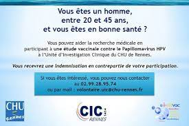

Phase I: Participation de personnes en bonne santé
L'objective de cette phase est de déterminer la méthode d'administration, le délai entre les doses et la demi-vie du médicament
Afin d'atteindre ses résultats, il faudra tester:
- -La tolérance du volontaire (Premièrement à dose unique, deuxièmement à doses répétées)
- -La pharmacocinétique ou Pk (Transformation du médicament dans l'organisme)